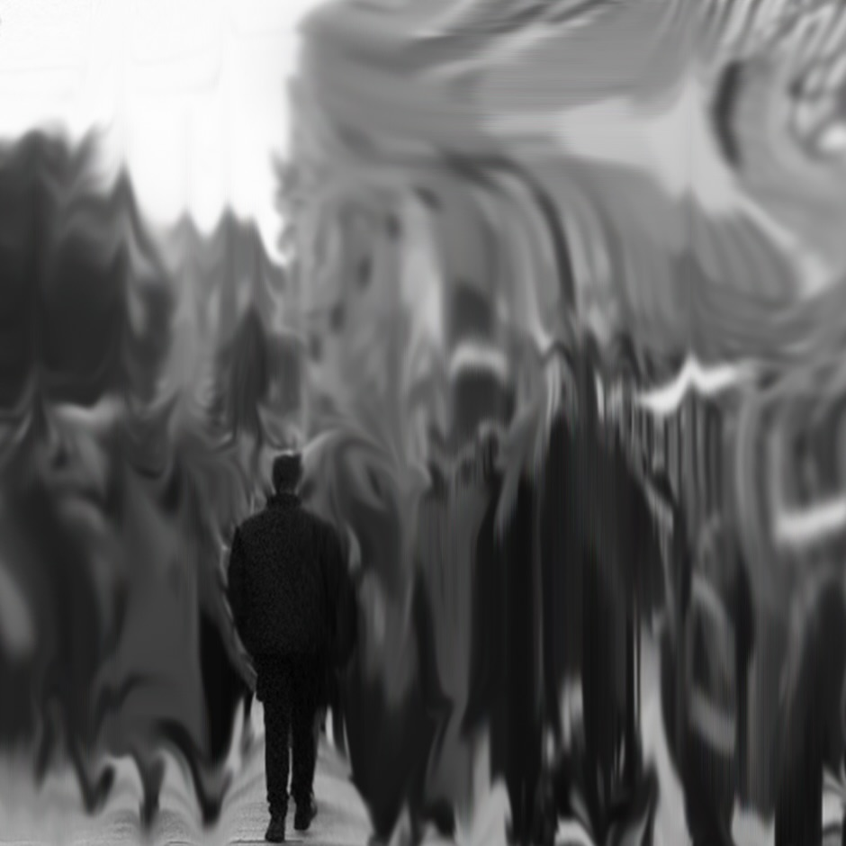
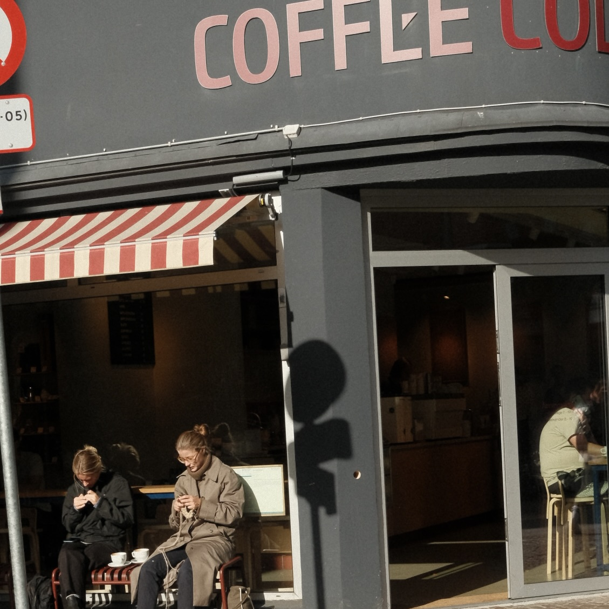
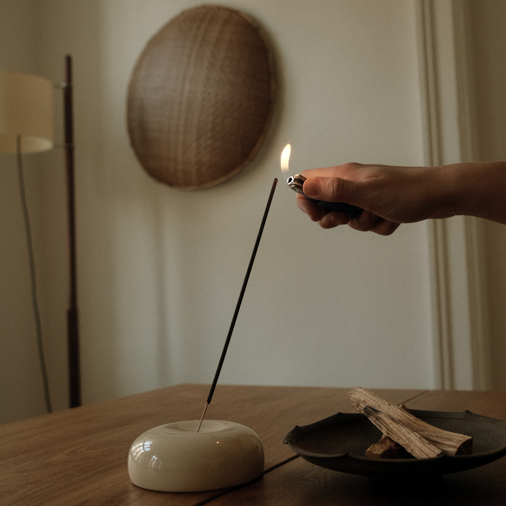

Teknikker mod angst og stress
Når vi snakker om angst og stress, er der mange metoder der virker. Det afhænger fra person til person.
Her kommer nogle forskellige teknikker man kan benytte sig af.
Åndedrætsøvelser mod stress og angst
Åndedrætsøvelser er behjælpelige mod angst og stress, da de giver lov til at sænke hjerterytmen,
som kan stige gevaldigt i forbindelse med et angstanfald eller en stresset periode.
- Sid eller lig ned på en behagelig måde.
- Placer den ene hånd på brystet og den anden på maven.
- Ånd ind dybt gennem næsen, og lad maven udvide sig (mærk, hvordan hånden på maven hæver sig).
- Ånd ud langsomt gennem munden og mærk maven falde tilbage.
- Gentag i 5-10 minutter.
Meditation til angst og stress
Der findes 7 forskellige former for meditation. I denne artikel går vi videre med den grundlæggende meditationsteknik,
som er nem at benytte derhjemme, eller andre steder hvor du kan få ro og fred til det.
- Find et sted, hvor du ikke vil blive forstyrret.
- Du kan sidde på en stol med fødderne fladt på gulvet eller sidde på gulvet i en komfortabel stilling.
Det er vigtigt at du kan være afslappet.
- Sid med rank ryg og afslappet kropsholdning.
- Du kan lukke øjnene eller have dem let åbne,
hvori du her kan vælge at holde fokus på noget i rummet.
- Ret opmærksomheden mod din vejrtrækning.
- Mærk hvordan luften strømmer ind og ud af din krop.
- Hvis dine tanker begynder at vandre, så bring stille opmærksomheden tilbage til åndedrættet.
- Lad tankerne komme og gå uden at blive fanget i dem og lade dem distrahere dig.
- Fokuser på at vende tilbage til åndedrættet eller dit valgte fokuspunkt.
- Start med korte sessioner, f.eks. 5 minutter, og øg herefter varigheden over tid.
Det bliver lettere for hver gang man gør det.
Åndedrætsøvelser samt meditation er øvelser mod angst og stress, som kan være meget behjælpelige.
De giver ro og lader tankerne få en pause.



